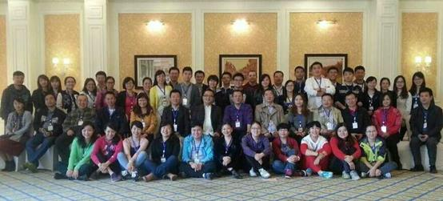

五星人格智慧管理课程
当前经济发展快速，谁掌握了核心技术，谁就是超级大赢家，核心技术就是——人！特别是企业管理涉及方方面面，在企业创造初期，可能大家埋头苦干，不需要健全企业管理制度、流程也能创造出一片天地来，但这种粗放式的创业模式会给企业进一步发展带来一些阻碍的脚步，后期改革力度不够的话，企业寿命很难长久。企业经过发展生存了一段时间的，更需要健全的管理制度，管理制度建立可以很快速，但是往往执行力会大打折扣，制度的建立与执行都是离不开“人”的操作，所以企业高层更要学习掌握人格模式！徐锦元先生将带领企业管理层掌握用人、选人、任人方面的运用技巧，助力企业在决策、组织、员工管理、选择合作伙伴等方面能做到知人善用，助力企业健康快速发展。
导 读
你是否总把问题上交，让上司不省心？
你是否对下属恨铁不成钢却不知如何激励？
你是否迫切希望提升个人领导魅力和气场？
你是否苦于下属不给力而只能自己埋头单干？
你是否常纠缠于事而不会从人的角度解决问题？
管理一句话“千万别管人，管人要管心。”
“五星人格”是徐锦元先生结合自己近二十年的销售、管理实践经验，根植中国文化为基础，整合西方的人格心理学和行为学理论，通过统计学对近五万人的人格模式进行分析，并归纳整合古今中外各种心理学理论后，形成的一套以当今社会现实为基础的实用、简单、易操作的创新人格分析系统。
《五星人格智慧管理》首先传授如何运用“五星人格”理论系统，觉察自身的五星人格模式，认识自己管理风格上的优点与盲点，并学会自我管理；其次在觉察自身管理风格的基础上，传授如何针对企业的岗位要求，从甄选人才、培训人才和管理人才上一步步根据人格模式来有效匹配；同时传授如何认识了解下属的人格模式，针对不同的人格模式下属不一样的管理方法。
培训效果预估
1.
觉察自身人格模式的优点与盲点，学会接纳自己，管理自己，欣赏自己；
2.
认识自身的管理模式，按照自己的人格模式，针对性提升个性化的领导魅力；
3.
掌握管理人格模式的钥匙；让管理转换新角度，从人格模式着手管理；
4.
了解自身管理模式，学会分析发现团队可能潜在的问题，并需要注意的要点；
5.
学会辨别下属的人格模式，知道针对不同人格模式者进行有效地指导与激励；
选择我们的理由
1.专业的理论基础构成
2.精确的测评结果呈现
3.庞大的受试群体测试
4.简单易用的测评工具
5.应用面积极广泛使用
五星人格简介
五星人格
(Outstanding Five Star Personality)，是一种人格分类方式。以统计学及心理学作为基础，通过人的行为导向以及行动步调将人格区分为四种基本的行为模式。以此为基础探讨人格模式与行为的关系，并进一步深入到管理、销售、沟通、谈判等具体应用中去。
五星人格适合所有人群与年龄，五星人格不会随种族、法规、文化或经济地位而改变，它只代表着一种可观察的人类行为与情绪。
五星人格基本概念
五星：金星、木星、水星、火星、土星
人格：人格是个体由遗传和环境所决定的实际的和潜在的行为模式的总和。
金星：领导者，坚强果敢，直接行动派；
木星：思考者，技术与艺术气质并存；
水星：支持者，温柔内敛，和平主义者；
火星：社交者，热情友善，天生乐天派；
土星：整合者，兼济金木水火星特质。
部分授课见证
1.课程名称： 《广东省移动客户服务（深圳）中心综合管理能力素质提升培训》
授课时间：2013-12-09-12-10
授课地点：深圳
课程所属领域：通用管理——中层管理
客户名称：移动客户服务中心 中层管理者
客户所属行业：通信
内容介绍：
首先清晰地了解沟通在个人综合管理能力素质的重要性以及在工作中为什么会存在沟通障碍；接着传授从根源上解决沟通存在的问题即通过认识自己的人格模式，觉察自己的沟通人格模式，清楚地认识自己沟通方式存在的优点与盲点。从而因时因地因人调整自己的沟通方式。
其次在了解自己沟通模式的基础上，传授如何识别他人的沟通人格模式具体技巧。最后在学员互动和角色扮演分析中，如何用自己的沟通人格模式与他人的沟通人格模式建立良好的人际关系，从而整体上提升自身的综合能力素质提升。
2.《泰康人寿福建分公司卓越主管培训班》
授课时间：2013-10-03
授课地点：福州
课程所属领域：通用管理——中层管理
客户名称：中层管理者
客户所属行业：银行保险
内容介绍：
首先运用“五星人格”理论系统认识自己，了解自己人格模式的优点与盲点！在认识自身优点与盲点的基础上，觉察自己，接纳自己！在接纳自己的基础上，解析自己的管理人格模式，清晰了解自己管理人格模式的优点与盲点，分析自己团队中可能存在的管理问题，并找到解决问题的方法。
接着传授以管理者的身份，如何觉察下属的人格模式，并清楚地掌握下属人格模式的优点与盲点后，合理地安排合适的岗位。以及传授如何针对不同人格模式的下属如何进行指导与激励！
3.《五星人格生命人寿黑龙江分公司高层管理培训》

授课时间：2013-11-2-4
授课地点：哈尔滨
课程所属领域：管理销售
客户名称：生命人寿黑龙江分公司高层
客户所属行业：保险行业培训
内容介绍：
运用“五星人格”认识自己，了解自己，因为只有认识自己了，才能悦纳自己、欣赏自己。只有悦纳自己、欣赏自己才能更好地投入生活与工作中！课程分为两部分，首先针对本企业本行业最需要的销售技巧的传授。徐锦元先生传授最具实用性的如何运用人格模式来有效营销以及更细微地如何通过声音、肢体语言以及行为模式来辨别客户的人格模式。在辨别人格模式的基础上，再授予不同人格模式的营销要点与技巧，从而达到快速达成交易。其次再讲授管理知识。管理不要管人，要管心。更是个性化地互动分析不同的人格模式可能存在的管理问题，并讲解有效解决方法。另外再详细阐述不同人格模式的下属的真正需求与动机，再针对性进行如何提高稳定度与效率。凝聚团队的力量的同时提升业绩！
4. 《福建新大陆集团全国销售经理培训班》
授课时间：2013-02-20
授课地点：福州
课程所属领域：通用管理——企业管理
客户名称：新大陆集团全国销售经理
客户所属行业：科技公司
内容介绍：
内容分为两部分：一是通过测评、评估、发现了解自己的五星人格模式，了解自我人格模式的优点与缺点，突破心理障碍；学会主动且成功展示自己，以及接触更多中高层客户的技巧和销售沟通技巧与应对，特别是谈判的沟通技巧与掌握解决问题的方法；第二部分是掌握基本合同辨识、招投标流程与招标技巧；
5.《五星人格之树一派菁英管理提升班》
授课时间：2013-09-10
授课地点：厦门
课程所属领域：通用管理——团队的力量
客户名称：企业员工
客户所属行业：美容化妆
内容介绍：
通过五星人格系统测评与评估，了解自身人格模式的优点与盲点。学习自我接纳与自我管理。同时通过学习五星人格行为模式特征的详解，清晰地了解个人与个人的差异，学习接纳自己的同时也学会理解他人，促进团队融洽地沟通，增加团队的凝聚力。
课程中也针对美容化妆服务行业，传授如何辨别客户的不同人格模式，并针对不同人格模式的客户该如何进行销售与服务，突破销售瓶颈，提升整个团队的业绩！